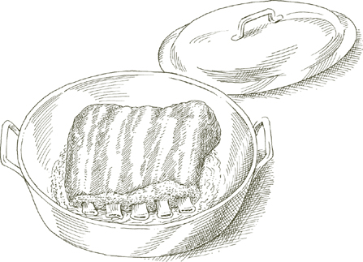
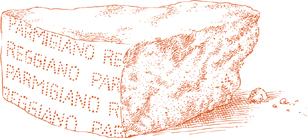
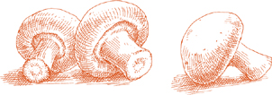

ДЛЯ ИТАЛЬЯНСКИХ СЕМЕЙ, это изысканно простое блюдо является классическим способом приготовления запеченного мяса. Оно идеально иллюстрирует базовый метод пан-ростинга, используемый домашними поварами в Италии, который полностью осуществляется на плите. Его секрет заключается в медленном, внимательном приготовлении в частично закрытой кастрюле, тщательно контролируя количество жидкости, чтобы её было достаточно, чтобы мясо не прилипало к сковороде, но не так много, чтобы это разбавляло его вкус. Никакая другая техника не дает более насыщенного или сочного запеченного мяса, и она так же успешна с птицей и бараниной, как и с телятиной.
На 6 порций
3 средних зубчика чеснока
2 фунта (900 г) телятины без костей (см. примечание ниже)
Веточка розмарина ИЛИ 1 чайная ложка сушеных листьев розмарина
2 столовые ложки растительного масла
2 столовые ложки сливочного масла
Соль
Черный перец, свежемолотый
⅔ чашки сухого белого вина
Примечание  Сочный, ароматный и недорогой кусок для этого запеченного блюда — это телячья лопатка без костей, скрученная в рулет.
Сочный, ароматный и недорогой кусок для этого запеченного блюда — это телячья лопатка без костей, скрученная в рулет.
1. Легко разомните чеснок ручкой ножа, ударяя его достаточно сильно, чтобы треснуть кожуру, которую вы удалите и выбросите.
2. Если мясо нужно свернуть, положите чеснок, розмарин и несколько щепоток перца на него, пока оно плоское, затем сверните и надежно свяжите. Если это целый кусок мяса, проколите его в нескольких местах острым узким ножом и вставьте чеснок, распределив веточку розмарина, разделенную на несколько частей, или сушеные листья.
3. Выберите кастрюлю с толстым дном или эмалированную чугунную кастрюлю, возможно, овальной формы, достаточно большую, чтобы вместить мясо. Влейте масло и добавьте сливочное масло, включите огонь на средний высокий, и когда пена от масла начнет утихать, положите мясо и обжарьте его со всех сторон до глубокой корочки. Посыпьте солью и перцем.
4. Добавьте вино и, используя деревянную ложку, освободите подгоревшие остатки, прилипшие к дну и стенкам кастрюли. Отрегулируйте огонь так, чтобы вино едва кипело, накройте крышкой слегка приоткрытой и готовьте в течение 1½–2 часов, пока мясо не станет очень нежным при прокалывании вилкой. Переворачивайте мясо время от времени во время готовки и, если в кастрюле нет жидкости, добавляйте 2 или 3 столовые ложки воды по мере необходимости.
5. Когда мясо будет готово, перенесите его на разделочную доску. Если в сковороде не осталось сока, влейте ¼ чашки воды, увеличьте огонь до высокого и выпарите воду, освобождая остатки готовки, прилипшие к дну и стенкам. Если, наоборот, в сковороде оказалось слишком много жидкости — должно быть около ложки или чуть меньше сока на порцию — уменьшите его на высоком огне. Выключите огонь.
6. Нарежьте мясо на куски толщиной около ¼ дюйма (0.6 см). Выложите их на теплое блюдо, полейте соками от готовки и подавайте сразу.
Заметка заранее Готовку можно завершить до этого момента за несколько часов до подачи. Разогрейте аккуратно в закрытой кастрюле с 1 или 2 столовыми ложками воды, если это необходимо.
ГРУДИНКА является одним из самых сочных и вкусных, а также одним из самых недорогих кусков телятины. Реберные кости, к которым она прикреплена, должны быть удалены, чтобы мясо можно было свернуть, но если вы попросите мясника сделать это за вас, не оставляйте кости, так как они являются отличным дополнением к домашнему мясному бульону.
Если вы хотите попробовать удалить кости самостоятельно — это довольно просто — действуйте следующим образом: положите грудинку на рабочую поверхность, ребра вниз, и вставьте лезвие острого ножа между мясом и костями, освобождая все мясо в одном плоском куске. Удалите кусочки хрящей и свободные участки кожи, но не отделяйте один слой кожи, который прилипает к грудинке и покрывает ее.
На 4–6 порций
Грудинка телятины в одном куске, от 4½ до 5 фунтов (1800–2250 г) с костями, дающая примерно 1¾ фунта (800 г) мяса, когда кости удалены мясником или как описано выше
Соль
Черный перец, свежемолотый
¼ фунта (110 г) панчетты, нарезанной очень-очень тонко
2 или 3 зубчика чеснока, очищенных
Веточка или две розмарина ИЛИ 1 чайная ложка сушеных листьев розмарина
Кулинарная нить
1 столовая ложка растительного масла
2 столовые ложки сливочного масла
½ чашки сухого белого вина
1. Разложите мясо без костей на плоской поверхности, кожей вниз, посыпьте солью и перцем, распределите нарезанную панчетту, добавьте зубчики чеснока, расположенные на достаточном расстоянии друг от друга, и сверху положите розмарин. Плотно сверните мясо в рулет и надежно свяжите его кулинарной нитью.
2. Выберите кастрюлю с толстым дном или эмалированную чугунную, возможно, овальной формы, достаточно большую для мяса. Влейте масло и сливочное масло, включите средний огонь, и когда пена от масла начнет утихать, положите мясо и обжарьте его со всех сторон до глубокой корочки. Посыпьте солью и добавьте вино.
3. Доведите вино до кипения, переверните мясо в нем, и через несколько секунд уменьшите огонь, чтобы вино медленно и периодически кипело. Накройте крышкой, оставив немного приоткрытой, и готовьте в течение 1½–2 часов, пока мясо не станет очень мягким при прокалывании вилкой. Переворачивайте грудку время от времени во время приготовления и, если в кастрюле нет жидкости, добавляйте по 2 или 3 столовые ложки воды по мере необходимости.
4. Переложите мясо на разделочную доску. Добавьте 2 столовые ложки воды к сокам в кастрюле, увеличьте огонь до высокого и выпарите воду, используя деревянную ложку, чтобы соскабливать остатки готовки с дна и стенок. Выключите огонь.
5. Нарежьте грудку на ломтики толщиной чуть меньше ½ дюйма (1.25 см). Если оставить кулинарные нити, будет легче нарезать грудку на компактные ломтики, но убедитесь, что вы убрали все кусочки нити после нарезки. Найдите и выбросьте 2 зубчика чеснока, выложите ломтики на теплое сервировочное блюдо, полейте их соками из кастрюли и подавайте немедленно.
Примечание заранее Следуйте рекомендациям для Телятины, жаренной на сковороде с чесноком, розмарином и белым вином.
ХОТЯ это было одним из моих любимых мясных блюд, оно было настолько простым и понятным, что я принимала его как должное, и оно ускользнуло от моего внимания как рецепт для записи. Умерший Джеймс Бирд пробовал его со мной в ресторане «Диана» в Болонье, когда он приехал, в середине 1970-х, чтобы наблюдать за курсом, который я тогда преподавала. Именно он был так впечатлён, что настоятельно рекомендовал мне записать рецепт.
Целая грудка, с костями, обжаривается на сковороде на плите классическим итальянским способом, без жидкости, кроме небольшого количества жира для жарки, немного вина и собственных соков. Это гораздо проще, чем делать какие-либо замысловатые фаршированные блюда с грудкой телятины, и получается впечатляющее жаркое с богатым коричневым цветом и удивительно нежным, ароматным мясом.
На 4 порции
3 столовые ложки оливкового масла первого холодного отжима, 3 целые зубчика чеснока, очищенные
3½ фунта (1500 г) грудки телятины с ребрами
2 веточки свежего розмарина ИЛИ 1 чайная ложка сушеных листьев
Соль
Черный перец, свежемолотый
⅔ чашки сухого белого вина
1. Выберите сковороду, которая сможет разместить мясо в горизонтальном положении. Вылейте масло и добавьте чеснок, и включите средний огонь.

2. Когда масло станет достаточно горячим, положите грудку, кожей вниз. Масло должно шипеть, когда мясо попадает в сковороду. Добавьте розмарин. Обжарьте мясо с одной стороны до глубокой коричневой корочки, затем переверните на другую сторону. Добавьте соль и перец, готовьте еще минуту или две, переворачивая грудку 2 или 3 раза, затем добавьте вино. Когда вино закипит в течение 20 или 30 секунд, уменьшите огонь до минимума и накройте сковороду, оставив крышку немного приоткрытой.
3. Переворачивайте мясо время от времени во время готовки. Если оно прилипает, ослабьте его с помощью 2 или 3 столовых ложек воды и проверьте температуру, чтобы убедиться, что вы готовите на очень медленном огне. Телятина готова, когда она очень нежная при нажатии вилкой и имеет красивый коричневый цвет по всей поверхности. Ожидайте, что это займет 2-2½ часа.
4. Переложите грудку на разделочную доску, ребрами к себе. Используйте острый нож для разделки, чтобы освободить кости, оттяните их и выбросьте. Нарежьте мясо тонкими ломтиками, срезая по диагонали. Выложите нарезанное мясо на теплое сервировочное блюдо.

5. Наклоните сковороду и снимите часть жира. Включите средний огонь, добавьте 2 или 3 столовые ложки воды и доведите до кипения, используя деревянную ложку, чтобы соскоблить остатки пищи с дна и стенок. Вылейте сок из сковороды на телятину и немедленно подавайте на стол.
ОССОБУКО, oss bus на миланском диалекте означает «кость с отверстием». Конкретная кость, о которой идет речь, — это кость задней голяшки теленка, а кольцо мяса вокруг нее является самым сладким и нежным на всем животном. Чтобы убедиться, что оно будет таять на тарелке так, как задумала природа, следуйте следующим рекомендациям:
• Убедитесь, что голяшка идет только от более мясистой задней ноги. Если вы покупаете ее в супермаркете и сомневаетесь, поищите одного из мясников, который обычно бывает днем, и спросите его.
• Попросите нарезать оссобуку не толще 1½ дюйма (4 см). Это размер, при котором она готовится лучше всего. Толстая оссобука, как бы впечатляюще она ни выглядела на тарелке, редко готовится долго и медленно, и в итоге получается жесткой и волокнистой.
• Убедитесь, что мясник не удаляет кожу, окружающую голяшки. Она не только помогает удерживать оссобуку вместе во время приготовления, но и ее кремовая консистенция вносит восхитительный вклад в финальный вкус блюда.
• Будьте готовы дать оссобуку достаточно времени для приготовления. Медленное, терпеливое приготовление необходимо, если вы хотите сохранить естественную сочность голяшки.
Примечание Когда вы покупаете целую голяшку, попросите мясника отпилить оба конца. Вам не нужны они в оссобуку, потому что в них мало мяса, но они прекрасно подойдут для различных компонентов домашнего мясного бульона.
На 6–8 порций
1 чашка мелко нарезанного лука
⅔ чашки мелко нарезанной моркови
⅔ чашки мелко нарезанного сельдерея
4 столовые ложки (½ пачки) сливочного масла
1 чайная ложка мелко нарезанного чеснока
2 полоски лимонной корки без белой мякоти под ней
⅓ чашки растительного масла
8 ломтиков телячьей задней голяшки толщиной 1½ дюйма (4 см), каждый плотно завязанный посередине
Мука, рассыпанная на тарелке
1 чашка сухого белого вина
1 чашка основного домашнего мясного бульона, приготовленного как указано, ИЛИ ½ чашки консервированного говяжьего бульона с
½ чашки воды
1½ чашки консервированных импортных итальянских сливов, грубо нарезанных, с их соком
½ чайной ложки свежего тимьяна ИЛИ ¼ чайной ложки сушеного
2 лавровых листа
2 или 3 веточки петрушки
Черный перец, свежемолотый
Соль
1. Разогрейте духовку до 175°C (350°F).
2. Выберите кастрюлю с толстым дном или эмалированного чугуна, которая сможет вместить все голяшки телятины в один слой. (Если у вас нет одной достаточно большой кастрюли, используйте две меньшие, разделив ингредиенты на две равные части, добавив по 1 столовой ложке сливочного масла для каждой кастрюли.) Положите лук, морковь, сельдерей и масло, включите средний огонь. Готовьте около 6-7 минут, добавьте нарезанный чеснок и лимонную цедру, готовьте еще 2-3 минуты, пока овощи не станут мягкими, затем снимите с огня.
3. Налейте растительное масло на сковороду и включите средний огонь. Обваляйте голяшки телятины в муке, покрывая их со всех сторон и стряхивая излишки муки.
Когда масло достаточно разогреется — оно должно шипеть, когда вы положите в него телятину — аккуратно положите голяшки и обжарьте их до глубокого золотистого цвета со всех сторон. Уберите их со сковороды с помощью шумовки или лопатки и положите рядом с нарезанными овощами в кастрюле.
4. Наклоните сковороду и слейте все, кроме небольшого количества масла. Добавьте вино, уменьшите его, кипятя на среднем огне, одновременно скребя деревянной ложкой подгоревшие остатки, прилипшие ко дну и стенкам. Вылейте сок со сковороды на голяшки в кастрюле.
5. Налейте бульон в сковороду, доведите до кипения и добавьте в кастрюлю. Также добавьте нарезанные помидоры с соком, тимьян, лавровые листья, петрушку, перец и соль. Бульон должен покрывать голяшки на две трети. Если этого не происходит, добавьте еще.
6. Доведите жидкости в кастрюле до кипения, плотно закройте кастрюлю и поставьте ее в нижнюю треть предварительно разогретой духовки. Готовьте около 2 часов или пока мясо не станет очень мягким, когда его прокалывают вилкой, и не образуется густой, кремовый соус. Переворачивайте и поливайте голяшки каждые 20 минут. Если во время приготовления оссобуко жидкости в кастрюле станет недостаточно, добавляйте по 2 столовые ложки воды по мере необходимости.
7. Когда оссобуко будет готово, перенесите его на теплое блюдо, осторожно снимите веревочки, не давая голяшкам развалиться, полейте соусом из кастрюли и подавайте сразу. Если соки из кастрюли слишком жидкие и водянистые, поставьте кастрюлю на сильный огонь, выпарите излишки жидкости, затем вылейте уменьшенные соки на оссобуко на блюде.
Примечание Не обсыпайте телятину мукой или что-либо другое, что нужно обжарить, заранее, потому что мука станет влажной и не позволит достичь хрустящей корочки.
Если вы хотите строго следовать традиции оссобуко, вы должны добавить ароматическую смесь, называемую гремолада, к голяшкам, когда они почти готовы. Я сама этого никогда не делаю, но некоторым это нравится, и если вы хотите попробовать, вот что в нее входит:
1 чайная ложка тертой лимонной цедры, стараясь избежать белой мякоти
¼ чайной ложки чеснока, нарезанного очень-очень мелко
1 столовая ложка нарезанной петрушки
Смешайте ингредиенты равномерно и посыпьте смесью голяшки во время приготовления, но когда они будут готовы, чтобы гремолада готовилась с телятиной не более 2 минут.
Примечание заранее Оссобуко можно полностью приготовить за день или два заранее. Его следует разогревать осторожно на плите, добавляя 1 или 2 столовые ложки воды, если необходимо. Если вы используете гремоладу, добавьте ее только при разогреве мяса.
Легкое и деликатно ароматное оссобуко этого рецепта совершенно отличается от крепкой миланской версии. В нем отсутствуют томаты, овощи и травы традиционного приготовления, и оно готовится в медленном итальянском стиле, полностью на плите.
На 6-8 порций
¼ чашки оливкового масла первого холодного отжима
2 столовые ложки масла
8 ломтиков телячьей голяшки толщиной 1½ дюйма (по 4 см), каждый плотно завязан по середине
Мука, выложенная на тарелку
Соль
Черный перец, свежемолотый
1 чашка сухого белого вина
2 столовые ложки лимонной цедры без белой мякоти, очень мелко нарезанной
5 столовых ложек нарезанной петрушки
1. Выберите большую сковороду, которая сможет вместить все голяшки плотно, без наложения. (Если у Вас нет одной такой широкой сковороды, используйте две, разделив масло и жир пополам, добавляя по 1 столовой ложке каждого в каждую сковороду.) Влейте масло и добавьте сливочное масло, включите средний огонь. Когда пена от масла начнет утихать, обваляйте голяшки в муке, покрывая их с обеих сторон, стряхните лишнюю муку и положите их в сковороду.
2. Обжарьте мясо до глубокого золотистого цвета с обеих сторон, затем посыпьте солью и несколькими щепотками перца, переверните голяшки и добавьте вино. Уменьшите огонь до очень медленного кипения и накройте сковороду, оставив крышку немного приоткрытой.
3. Через 10 минут посмотрите в сковороду, чтобы проверить, достаточно ли жидкости для продолжения приготовления. Если, как это вероятно, жидкости недостаточно, добавьте ⅓ чашки теплой воды. Проверяйте сковороду время от времени и добавляйте воду по мере необходимости. Общее время приготовления составит 2 или 2½ часа: голяшки готовы, когда мясо легко отделяется от кости и достаточно нежное, чтобы его можно было нарезать вилкой. Когда будет готово, перенесите телятину на теплую тарелку, используя шумовку или лопатку.
4. Добавьте нарезанную лимонную цедру и петрушку в сковороду, увеличьте огонь до среднего и помешивайте около 1 минуты деревянной ложкой, освобождая остатки пищи от дна и стенок, и уменьшая любые жидкие соки в сковороде. Верните голяшки в сковороду, быстро обваляйте их в соках, затем перенесите все содержимое сковороды на теплое блюдо и подавайте сразу.
Примечание заранее Легкий, ароматный вкус этого оссобуко плохо переносит хранение в холодильнике, поэтому не рекомендуется готовить его слишком заранее. Его можно приготовить в тот день, когда он будет подаваться; разогрейте его в сковороде, в которой он готовился, накрыв, на слабом огне, в течение 10 или 15 минут, пока мясо не прогреется полностью. Если жидкости в сковороде станет недостаточно, добавьте 1 или 2 столовые ложки воды.
Стинко — это итальянское слово для того, что в диалекте Триеста называется шчинко, голяшка телятины, медленно тушеная целиком, затем подается нарезанной очень тонкими ломтиками. Она происходит из той же части задней ноги, что и миланское оссобуко, с которым она разделяет сочность, но в отличие от оссобуко, она не готовится с помидорами. Анчоусы, которые являются частью основы вкуса, растворяются и становятся незаметными, но они тонко способствуют глубине вкуса, что является отличительной чертой этого блюда. Стинко или шчинко лучше всего готовить полностью на плите классическим итальянским методом жарки в сковороде.
На 8 порций
2 целые голяшки телятины (см. примечание ниже)
2 зубчика чеснока
3 столовые ложки растительного масла
3 столовые ложки сливочного масла
½ чашки нарезанного лука
Соль
Черный перец, свежемолотый
⅓ чашки сухого белого вина
6 плоских филе анчоусов (желательно приготовленных дома как описано)
Примечание Голени должны быть от задней ноги. Попросите мясника срезать сустав на широком конце голени, чтобы кость можно было поставить на стол вертикально, окруженную нарезанными ломтиками. Также попросите мясника срезать достаточно кости с узкого конца, чтобы обнажить мозг, который можно извлечь с помощью узкого инструмента и который является очень вкусным.
1. Установите голени на широком конце и, с помощью острого ножа, ослабьте кожу, мясо и сухожилия на узком конце. Это приведет к тому, что мясо, готовясь, отделится от кости на этом конце и соберется в упитанную массу у основания голени, придавая стинко форму, похожую на гигантский леденец. Если вам трудно сделать это, когда мясо сырое, попробуйте через 10 минут готовки, когда это станет гораздо проще.
2. Легко раздавите чеснок ручкой ножа, достаточно сильно, чтобы расколоть кожу, которую вы затем освободите и выбросите.
3. Вам понадобится кастрюля с толстым дном, предпочтительно овальной формы, которая затем сможет удобно вместить обе голени. Влейте масло и сливочное масло, включите средний огонь, и когда пена от масла начнет утихать, положите обе голени.
4. Переверните голени, чтобы мясо телятины хорошо подрумянилось со всех сторон, затем уменьшите огонь до среднего и добавьте нарезанный лук, втирая его между мясом на дно кастрюли.
5. Готовьте лук, помешивая, пока он не станет золотистым. Добавьте чеснок, соль, перец и вино. Дайте вину покипеть около 1 минуты, перевернув голени один или два раза, затем добавьте филе анчоусов, уменьшите огонь до минимального и накройте кастрюлю, оставив крышку немного приоткрытой. Готовьте около 2 часов, пока мясо не станет очень нежным при прокалывании вилкой. Переворачивайте телятину время от времени. Когда жидкости в кастрюле станет так мало, что мясо начнет прилипать ко дну, добавьте ⅓ чашки воды и переверните голени.
6. Когда телятина будет готова, положите голень на разделочную доску и нарежьте мясо на тонкие ломтики, срезая под углом, по диагонали к кости. Установите нарезанные кости на их широком конце на теплую сервировочную тарелку и разложите ломтики мяса у их основания.
7. Влейте ⅓ чашки воды в кастрюлю, в которой готовили мясо, увеличьте огонь до максимума и выпарите воду, используя деревянную ложку, чтобы освободить все остатки от готовки с дна и стенок. Полейте соками из кастрюли ломтики телятины и подавайте сразу.
Примечание заранее Все блюдо можно приготовить за несколько часов до подачи. В этом случае, вместо того чтобы поливать соками из кастрюли телятину, положите нарезанное мясо в кастрюлю вместе с костями. Разогрейте на слабом огне непосредственно перед подачей, переворачивая ломтики в соке. Уложите на теплую тарелку, как описано выше, и подавайте сразу. Используйте блюдо в тот же день, когда вы его готовите, так как его вкус ухудшится, если оставить на ночь.
На 4 порции
2 столовые ложки растительного масла
2 столовые ложки сливочного масла
1 фунт телятины скалоппине, нарезанной из верхней части бедра и отбитой как описано
Мука, рассыпанная на тарелке
Соль
Черный перец, свежемолотый
½ чашки сухого вина Марсала
1. Положите масло и 1 столовую ложку сливочного масла на сковороду и включите средний огонь.
2. Когда жир разогреется, обваляйте обе стороны скалоппине в муке, стряхните излишки муки и положите мясо на сковороду. Быстро обжарьте с обеих сторон, примерно по полминуты с каждой стороны, если масло и сливочное масло достаточно горячие. Переложите на теплую тарелку, используя шумовку или лопатку, и посыпьте солью и перцем. (Если скалоппине не помещаются в сковороду одновременно без наложения, обжаривайте их партиями, но обваляйте каждую партию в муке непосредственно перед тем, как положить мясо на сковороду; в противном случае мука станет влажной и не даст достичь хрустящей корочки.)
3. Увеличьте огонь до максимума, добавьте Марсалу и, пока она выпаривается, соскребите деревянной ложкой все подгоревшие остатки со дна и стенок. Добавьте вторую столовую ложку сливочного масла и любые соки, которые скалоппине могли оставить на тарелке. Когда соки в сковороде больше не будут жидкими и будут иметь консистенцию соуса, уменьшите огонь до минимума, верните скалоппине в сковороду и переверните их один или два раза, чтобы полить соками из сковороды. Переложите все содержимое сковороды на теплое блюдо и подавайте немедленно.
ВЭТОЙ ВАРИАЦИИ на классическую тему телятины с Марсалой сливки добавляются, чтобы смягчить яркий акцент вина, не лишая его вкуса. Блюдо становится гораздо более нежным, чем в стандартной версии.
На 4 порции
1 столовая ложка растительного масла
2 столовые ложки сливочного масла
1 фунт (450 г) телятины скалоппине, нарезанной из верхней части бедра и отбитой как описано
Мука, рассыпанная на тарелке
Соль
Черный перец, свежемолотый
½ чашки сухого вина Марсала
⅓ чашки жирных сливок
1. Положите масло и сливочное масло в сковороду, включите средний огонь, и когда пена от масла начнет утихать, обваляйте скалоппине в муке и готовьте их точно так же, как описано в Шаге 2 рецепта Телятину Скалоппине с Марсалой.
2. Увеличьте огонь до сильного, добавьте в сковороду любые соки, которые скалоппине могли выделить на тарелке, и Марсалу. Пока вино выпаривается, соскребите деревянной ложкой все подгоревшие остатки на дне и стенках. Добавьте сливки и постоянно помешивайте, пока сливки не загустеют и не свяжутся с соками в сковороде в густой соус.
3. Уменьшите огонь до среднего, верните скалоппине в сковороду и переверните их один или два раза, чтобы хорошо покрыть соусом. Выложите все содержимое сковороды на теплое блюдо и подавайте сразу.
На 4 порции
1 столовая ложка растительного масла
3 столовые ложки сливочного масла
1 фунт (450 г) телятины скалоппине, нарезанной из верхней части бедра и отбитой как описано
Мука, рассыпанная на тарелке
Соль
Черный перец, свежемолотый
2 столовые ложки свежевыжатого лимонного сока
2 столовые ложки мелко нарезанной петрушки
½ лимона, нарезанного очень тонко
1. Положите масло и 2 столовые ложки сливочного масла в сковороду, включите средний огонь, и когда пена от масла начнет утихать, обваляйте скалоппине в муке и готовьте их точно так же, как описано в Шаге 2 рецепта Телятина с марсалой.
2. Снимите с огня, добавьте лимонный сок в сковороду, используя деревянную ложку, чтобы соскабливать подгоревшие остатки на дне и стенках. Вмешайте оставшуюся столовую ложку масла, добавьте любые соки, которые скалоппине могли выделить на тарелке, и добавьте нарезанную петрушку, перемешивая для равномерного распределения.
3. Включите средний огонь и верните скалоппине в сковороду. Быстро переверните их, достаточно лишь для того, чтобы прогреть и покрыть соусом. Выложите все содержимое сковороды на теплое блюдо, украсьте его ломтиками лимона и подавайте немедленно.
Примечание Иногда скалоппине с лимоном посыпают свежей нарезанной петрушкой. Это вполне допустимо, если вы не готовите соус с петрушкой. Цвет приготовленной петрушки контрастирует с цветом свежей, что выглядит неаппетитно. Если вы используете одно, исключите другое.
На 4 порции
225 г моцареллы, предпочтительно из буйволиного молока
2 столовые ложки сливочного масла
1 столовая ложка растительного масла
450 г телятины скалоппине, нарезанной из верхней части бедра и отбивной как описано
Соль
Черный перец, свежемолотый
1. Нарежьте моцареллу на самые тонкие ломтики, которые сможете, убедившись, что у вас получится по 1 ломтику на каждое скалоппине.
2. Выберите сковороду для жарки, которая сможет вместить все скалоппине без наложения. (Если у вас нет одной такой большой сковороды, используйте две, разделив сливочное масло и масло пополам, затем добавьте по 1 столовой ложке каждого масла в каждую сковороду.) Положите масло и включите сильный огонь.
3. Когда пена от масла начнет утихать, положите скалоппине. Быстро обжарьте их с обеих сторон, около 1 минуты всего, если жир достаточно горячий. Посыпьте солью и уменьшите огонь до среднего.
4. Положите ломтик моцареллы на каждую из скалоппине и посыпьте перцем. Накройте сковороду крышкой на несколько секунд, чтобы моцарелла размягчилась. С помощью шумовки или лопатки переложите телятину на теплую сервировочную тарелку, стороной с моцареллой вверх.
5. Добавьте 1 или 2 столовые ложки воды в сковороду, увеличьте огонь до максимума и, пока вода выпаривается, соскребите остатки пищи со дна и стенок деревянной ложкой. Полейте несколько темных капель сока из сковороды по скалоппине, покрывая моцареллу, и подавайте немедленно.
На 4 порции
2½ столовые ложки растительного масла
3 зубчика чеснока, очищенных
1 фунт (450 г) телятины скалоппине, нарезанной из верхней части бедра и отбивной как описано
Мука, рассыпанная по тарелке
Соль
Черный перец, свежемолотый
⅓ чашки сухого белого вина
½ чашки консервированных итальянских помидоров «сливка», нарезанных, с соком
1 столовая ложка масла
1 чайная ложка свежего орегано ИЛИ ½ чайной ложки сушеного
2 столовые ложки каперсов, замоченных и промытых как описано, если упакованы в соль, слить, если в уксусе
1. Положите масло и чеснок на сковороду, включите средний огонь и готовьте чеснок, пока он не станет светло-коричневым. Уберите его из сковороды и выбросьте.
2. Увеличьте огонь до среднего высокого, обваляйте скалоппини в муке и готовьте их точно так, как описано в Шаге 2 Скалоппини из телятины с Марсалой, переложите на теплую тарелку, когда они будут готовы.
3. На среднем высоком огне добавьте вино, и пока вино кипит, используйте деревянную ложку, чтобы освободить все остатки пищи на дне и стенках. Добавьте нарезанные помидоры с их соком, перемешайте, чтобы хорошо покрыть, добавьте масло и любые соки, которые скалоппини могли оставить на тарелке, перемешайте и отрегулируйте огонь, чтобы готовить на постоянном, но легком кипении.
4. Через 15 или 20 минут, когда жир отделится от томатов, добавьте орегано и каперсы, тщательно перемешайте, затем верните скалоппини в сковороду и переверните их в томатном соусе на минуту, пока они снова не нагреются. Выложите все содержимое сковороды на теплое блюдо и подавайте немедленно.
На 4 порции
3 столовые ложки масла
4 плоских филе анчоусов (предпочтительно приготовленные дома как описано), очень мелко нарезанные
¼ фунта вареной не копченой ветчины, нарезанной толщиной ¼ дюйма и мелко нарезанной
1½ столовые ложки каперсов, замоченных и промытых как описано, если упакованы в соль, слить, если в уксусе, и нарезанных
1 столовая ложка растительного масла
Мука, рассыпанная на тарелке
1 фунт телячьих скалоппини, нарезанных из верхней части бедра и раскатанных как описано
Соль
Черный перец, свежемолотый
3 столовые ложки граппы (см. примечание ниже)
¼ чашки густых сливок
Примечание Граппа — это сильно ароматный дистиллированный спирт, изготовленный из выжимок, остатка виноделия. Обычно его можно купить в магазинах, торгующих итальянскими винами, но его можно заменить на марк, французский спирт, изготовленный как граппа. Если ни то, ни другое недоступно, используйте кальвадос, французский яблочный бренди, или хороший виноградный бренди.
1. Положите половину масла в маленькую кастрюлю, включите очень слабый огонь и добавьте нарезанные анчоусы. Постоянно помешивайте, пока анчоусы готовятся, разминая их в пасту о стенки кастрюли деревянной ложкой. Когда анчоусы начнут растворяться, добавьте нарезанный ветчину и рубленые каперсы, увеличьте огонь до среднего. Тщательно перемешайте, чтобы все покрыть, готовьте около 1 минуты, затем снимите кастрюлю с огня.
2. Положите масло и оставшееся масло на сковороду и включите средний огонь. Когда пена от масла начнет спадать, обваляйте скалоппине в муке и готовьте их точно так, как описано в Шаге 2 Телятине Скалоппине с Марсалой.
3. Наклоните сковороду и слейте большую часть жира. Верните на средне-высокий огонь, добавьте граппу и, пока она быстро кипит, используйте деревянную ложку, чтобы освободить все остатки от готовки на дне и стенках. Добавьте смесь ветчины и анчоусов из кастрюли в сковороду и любые соки, которые скалоппине могли оставить на тарелке, и тщательно перемешайте, чтобы все ингредиенты равномерно соединились. Добавьте сливки и немного уменьшите, помешивая.
4. Верните скалоппине в сковороду и переверните их в горячем соусе примерно на минуту, пока они снова полностью не прогреются. Выложите все содержимое сковороды на теплое блюдо и подавайте сразу.
На 4 порции
½ фунта (225 г) свежей спаржи
2 столовые ложки масла плюс масло для смазывания готового блюда
1½ столовые ложки растительного масла
1 фунт (450 г) телятины скалоппине, нарезанной из верхней части бедра и отбитой как описано
Мука, распределенная по тарелке
Запеканка
Кулинарная бумага или алюминиевая фольга повышенной прочности
Соль
Черный перец, свежемолотый
6 унций (170 г) сыра фонтина
⅓ чашки сухого вина Марсала
1. Удалите кончики спаржи, очистите стебли и приготовьте спаржу как описано. Не переварите, но слейте воду, когда она все еще будет крепкой на вкус. Отложите в сторону до тех пор, пока не дойдете до инструкций по нарезке в этом рецепте.
2. Положите масло и масло в сковороду и включите сильный огонь. Когда пена от масла начнет утихать, возьмите столько скалоппине, сколько поместится в сковороду, обваляйте их с обеих сторон в муке, стряхните лишнюю муку и положите их в сковороду. Обжарьте телятину с обеих сторон, всего минуту или меньше, если жир очень горячий, затем переложите на тарелку с помощью шумовки или лопатки. Добавьте следующую партию скалоппине в сковороду и повторите описанную выше процедуру, пока не обжарите все мясо.
3. Разогрейте духовку до 200°C (400°F).
4. Выберите форму для запекания, которая сможет вместить все скалоппине плотно, но без перекрытия. Выстелите ее кулинарной бумагой или куском алюминиевой фольги, который достаточно велик, чтобы выходить за края формы. При работе с фольгой будьте осторожны, чтобы не порвать или не проколоть ее. Выложите скалоппине в форме и посыпьте их солью и перцем.
5. Нарежьте спаржу по диагонали на кусочки, длина которых не превышает скалоппине. Если какая-либо часть стебля толще 1½ см (½ дюйма), разделите ее пополам. Уложите каждый кусочек скалоппине на слой кусочков спаржи. Легко посыпьте солью.
6. Нарежьте сыр на самые тонкие ломтики, которые сможете. Не беспокойтесь, если ломтики имеют неправильную форму, они соединятся в один, когда сыр расплавится. Накройте слой спаржи одним из ломтиков сыра.
7. Слейте и выбросьте весь жир из сковороды, в которой вы обжаривали телятину, но не вытирайте сковороду. Добавьте в нее любые соки, которые скалоппине могли выделить на тарелке, и марсалу. Включите средний огонь и соскребите деревянной ложкой подгоревшие остатки на дне и стенках, уменьшая соки в сковороде до примерно 3 столовых ложек.
8. Полейте соками слой сыра, равномерно распределяя их. Легко добавьте масло. Возьмите лист пергамента или фольги, достаточно большой, чтобы свисать за край формы для запекания, и положите его плоско на скалоппине. Соберите края нижнего листа пергамента или фольги и верхнего листа, прижимая их, чтобы сделать плотное запечатывание. Поставьте форму для запекания на верхнюю полку предварительно разогретой духовки и оставьте на 15 минут, ровно столько, чтобы сыр расплавился.

9. Выньте блюдо из духовки и откройте обертку из пергамента или фольги, осторожно направляя выходящий пар от себя, чтобы не обжечься. Отрежьте пергамент или фольгу по краям блюда и подавайте как есть или аккуратно поднимите скалоппине с помощью широкой металлической лопатки и перенесите их на теплую сервировочную тарелку, не переворачивая. Полейте соками из формы для запекания и подавайте немедленно.

На 4 порции
⅓ чашки крошки, мягкой, без корки, предпочтительно из хорошего итальянского или французского хлеба
⅓ чашки молока
56 г (2 унции) вареной не копченой ветчины, мелко нарезанной
56 г (2 унции) свинины, мелко нарезанной или измельченной
1 яйцо
⅓ чашки свеженатертого сыра пармиджано-реджано
Соль
Черный перец, свежемолотый
Целый мускатный орех
450 г (1 фунт) телятины скалоппине, нарезанной из верхней части бедра и раскатанной как описано
Прочные круглые зубочистки
2 столовые ложки масла
1 столовая ложка растительного масла
Мука, рассыпанная на тарелке
⅓ чашки сухого белого вина
½ чашки основного домашнего мясного бульона, приготовленного как указано, ИЛИ ½ кубика бульона, растворенного в ½ чашки воды
1. Положите хлебные крошки и молоко в небольшую миску. Когда хлеб впитает молоко, разомните его до кремообразной консистенции вилкой и слейте все излишки молока.
2. Добавьте нарезанный ветчину, свинину, яйцо, тертый пармезан, соль, перец, небольшую тертую мускатную орех — около ⅓ чайной ложки — и хлебную массу с молоком, и перемешайте вилкой до равномерного соединения всех ингредиентов. Выложите смесь на рабочую поверхность и разделите на столько частей, сколько у вас скалоппине.
3. Выложите скалоппине на рабочую поверхность. Нанесите на каждую часть одну из порций начинки, равномерно распределяя ее по мясу. Скатайте мясо в рулет, и закрепите его зубочисткой, вставленной вдоль, чтобы рулет можно было легко перевернуть позже при готовке.
4. Выберите сковороду, которая сможет вместить все телячьи рулеты в один слой, положите в нее масло и растительное масло, и включите средний огонь. Обваляйте рулеты в муке со всех сторон, и когда пена от масла утихнет, положите их в сковороду.
5. Обжарьте мясо до глубокого золотистого цвета, затем добавьте вино. Когда вино немного выпарится, посыпьте солью, добавьте бульон, накройте сковороду крышкой и уменьшите огонь, чтобы готовить на медленном огне.
6. Когда телячьи рулеты полностью приготовятся, примерно через 20 минут, переложите их на теплое блюдо. Если соки в сковороде жидкие и текучие, увеличьте огонь до максимума и уменьшите их, одновременно соскребая деревянной ложкой остатки пищи со дна и стенок сковороды. Если, наоборот, они слишком густые и частично прилипли к сковороде, добавьте 1 или 2 столовые ложки воды, и пока вода выпаривается, соскребите все остатки пищи. Полейте соками из сковороды телячьи рулеты и подавайте немедленно.

На 4 порции
450 г телятины скалоппине, нарезанной из верхней части бедра и отбитой как описано
115 г панчетты, нарезанной очень-очень тонко
5 столовых ложек свеженатертого сыра пармиджано-реджано
Прочные круглые зубочистки
2 столовые ложки сливочного масла
2 столовые ложки растительного масла
Соль
Черный перец, свежемолотый
120 мл сухого белого вина
⅔ чашки свежих спелых помидоров, очищенных и нарезанных, ИЛИ консервированных итальянских сливовидных помидоров, нарезанных, с соком
1. Обрежьте скалоппине, чтобы они были примерно 12.5 см в длину и 9–10 см в ширину. Постарайтесь не оставить кусочки мяса, которые нельзя использовать. Не имеет значения, если некоторые куски будут неправильной формы: лучше использовать их, чем выбрасывать.
2. Разложите скалоппине плоско и на каждое положите достаточно паккеты, чтобы покрыть. Посыпьте тертым пармезаном и плотно сверните скалоппине в компактные рулеты. Закрепите рулеты зубочисткой, вставленной вдоль, чтобы мясо можно было переворачивать на сковороде. Если осталась паккета, нарежьте ее очень мелко и отложите в сторону.
3. Положите 1 столовую ложку масла и все масло в сковороду и включите средний огонь. Когда пена от масла начнет убывать, положите рулеты из телятины и переворачивайте их, чтобы они хорошо подрумянились со всех сторон. Переложите на теплую тарелку, используя шумовку или лопатку, удалите все зубочистки и посыпьте мясо солью и перцем.
4. Если вы отложили нарезанную паккету, положите ее в сковороду и готовьте на среднем огне около 1 минуты, затем добавьте вино. Дайте вину покипеть на медленном огне 1½–2 минуты, время от времени используя деревянную ложку, чтобы освободить остатки от готовки с дна и стенок сковороды. Добавьте помидоры, тщательно перемешайте и отрегулируйте огонь, чтобы готовить минуту или около того на постоянном медленном кипении, пока жир не отделится от томатов.
5. Верните рулеты из телятины в сковороду, подогревая их в течение нескольких минут и время от времени переворачивая в соусе. Снимите с огня, добавьте оставшуюся столовую ложку масла, затем выложите все содержимое сковороды на теплое блюдо и подавайте сразу.
Примечание заранее Эти рулеты из телятины не требуют много времени на приготовление и лучше всего подавать в момент их приготовления. Если вам нужно сделать их заранее, готовьте их до конца за несколько часов до подачи, затем аккуратно разогрейте в соусе.
На 6 порций
8 плоских филе анчоусов (предпочтительно приготовленных дома как описано)
3 столовые ложки масла
¼ чашки нарезанной петрушки
⅓ чашки консервированных итальянских сливов, слитых от сока
Черный перец, свежемолотый
½ фунта моцареллы, предпочтительно импортированной из буйволиного молока
1½ фунта телятины скалоппине, нарезанной из верхней части и отбивной как описано
Соль
Тонкая кухонная бечевка
Мука, рассыпанная на тарелке
½ чашки сухого вина Марсала
1. Мелко нарежьте анчоусы, положите их в небольшую кастрюлю с 1 столовой ложкой масла, включите огонь на очень низкий, и пока анчоусы готовятся, разминайте их деревянной ложкой о стенку кастрюли, чтобы превратить в пасту.
2. Добавьте нарезанную петрушку, помидоры, несколько щепоток перца и увеличьте огонь до среднего. Готовьте на постоянном слабом кипении, часто помешивая, пока томат не загустеет и масло не отделится.
3. Нарежьте моцареллу на самые тонкие ломтики, которые сможете, возможно, около ⅛ дюйма (0.3 см).
4. Выложите скалоппине на тарелку или рабочую поверхность, посыпьте щепоткой соли и распределите томатно-анчоусный соус по ним, оставляя около ¼ дюйма (0.6 см) по краям. Сверху положите ломтики моцареллы. Скатайте скалоппине, заправьте мясо с обоих концов, чтобы закрыть их, и перевяжите кухонной бечевкой, обвив её один раз вокруг середины рулетов и один раз вдоль, чтобы зафиксировать оба конца.
5. Выберите сковороду, которая сможет вместить все рулеты без переполнения, положите оставшиеся 2 столовые ложки масла и включите огонь на средний высокий. Когда пена от масла начнет утихать, обваляйте рулеты в муке, стряхните излишки и положите их в сковороду. Готовьте одну-две минуты, переворачивая, пока они не подрумянятся со всех сторон. Если немного сыра вытечет из рулетов, это не повредит; это обогатит соус. Переложите мясо на теплую тарелку, отрежьте бечевку и снимите её, стараясь не развязать рулеты.
6. Добавьте Марсалу в сковороду, доведите до активного кипения на протяжении около 2 минут, и пока она уменьшается, используйте деревянную ложку, чтобы отскоблить остатки от дна и стенок. Верните рулеты в сковороду, аккуратно переверните их в соусе 2 или 3 раза, затем переложите все содержимое сковороды на теплое блюдо для подачи и подавайте немедленно.
Одна БОЛЬШАЯ ломтик телятины покрыт шпинатом, обжаренным с луком и прошутто, плотно скатан и обжарен на сковороде с белым вином. Когда его нарезают, чередующиеся слои телятины и начинки создают привлекательный спиральный узор, но что более важно, он сочный и вкусный, на вкус такой же хороший, как и выглядит.
Чтобы приготовить это блюдо, вам нужен один большой, один фунт (450 г) ломтик телятины, предпочтительно нарезанный из самой широкой части верхней части бедра, и раскатанный вашим доброжелательным мясником до толщины не более ⅜ дюйма (0.95 см). Грудка телятины, которая обычно используется для приготовления больших рулетов, не подходит для этого рецепта из-за своей неровной толщины.
На 4 порции
1½ фунта (700 г) свежего шпината
Соль
3 столовые ложки сливочного масла
2 столовые ложки растительного масла
2 столовые ложки лука, очень мелко нарезанного
¼ фунта (110 г) прошутто ИЛИ панчетта, очень мелко нарезанная
Черный перец, свежемолотый
Кусок телятины весом 1 фунт (450 г), предпочтительно из верхней части ноги (см. примечания выше), отбитый до толщины ⅜ дюйма (0.95 см)
Тонкая кухонная бечевка
½ чашки сухого белого вина
⅓ чашки густых сливок
1. Отделите листья от шпината, выбросив все стебли. Замочите шпинат в тазу с холодной водой, несколько раз погружая его. Осторожно поднимите шпинат, вылейте воду вместе с осевшей на дно грязью, наполните таз свежей водой и повторите всю процедуру столько раз, сколько необходимо, пока шпинат не будет полностью очищен от грязи.
2. Готовьте шпинат в закрытой сковороде на среднем огне с той водой, которая прилипла к его листьям, и 1 столовой ложкой соли, чтобы он сохранил зеленый цвет. Готовьте в течение 2 минут после закипания жидкости, выделенной шпинатом, затем сразу же слейте. Как только шпинат остынет до приемлемой температуры, отожмите из него как можно больше влаги, мелко нарежьте ножом, не используя кухонный комбайн, и отложите в сторону.
3. Положите 1 столовую ложку масла, 1 столовую ложку оливкового масла, весь лук и весь прошутто или панчетту в небольшую сковороду и включите средний огонь. Готовьте лук, пока он не станет насыщенного золотисто-коричневого цвета, затем добавьте нарезанный шпинат и несколько щепоток перца. Тщательно перемешайте, чтобы все хорошо покрыть, и готовьте 20 или 30 секунд, затем снимите с огня. Попробуйте и, если необходимо, добавьте соль.
4. Положите кусок телятины на рабочую поверхность. Равномерно распределите шпинатную начинку по нему. Поднимите один конец куска, чтобы увидеть, как располагается волокно мяса, затем плотно сверните телятину так, чтобы волокна были параллельны длине рулета. Когда вы будете нарезать рулет после приготовления, вы легко получите ровные, компактные ломтики, так как будете резать поперек волокон. Надежно свяжите рулет в форме салями кухонной нитью.
5. Выберите кастрюлю, овальную, если возможно, в которую рулет поместится плотно. Положите в нее оставшееся масло и оливковое масло, включите средний огонь, и как только пена от масла начнет утихать, положите рулет из телятины. Обжарьте его со всех сторон до глубокой корочки, затем посыпьте солью и перцем, переверните рулет один или два раза и добавьте вино. Когда вино будет кипеть в течение 15 или 20 секунд, уменьшите огонь до минимума и накройте кастрюлю крышкой, оставив ее немного приоткрытой.
6. Готовьте около 1½ часов, периодически переворачивая рулет, пока мясо не станет очень нежным при прокалывании вилкой.
Снимите крышку с кастрюли, добавьте сливки, увеличьте огонь и используйте деревянную ложку, чтобы отложить остатки от приготовления от дна и стенок кастрюли. Снимите с огня, как только сливки немного загустеют и приобретут светло-ореховый цвет.
7. Переложите рулет на теплое блюдо. Обрежьте и удалите кухонную нить. Нарежьте рулет тонкими ломтиками, полейте его соками из кастрюли и подавайте немедленно.
Примечание заранее Вы можете завершить рецепт до этого момента за несколько часов заранее. Перед продолжением аккуратно разогрейте, добавив 1 столовую ложку воды, если необходимо. Никогда не ставьте в холодильник, иначе шпинат приобретет кислый вкус.
Некоторые ИТАЛЬЯНСКИЕ БЛЮДА так тесно связаны с местом своего происхождения, что присвоили его название себе. Для итальянцев фьорентина означает “стейк с Т-образной костью”, а панированная телячья отбивная — это уна миланезе: Другое описание не требуется. Можно спорить, что оссобуко или телячья отбивная миланезе являются самым известным гастрономическим экспортом Милана. Последняя, безусловно, была присвоена многими другими кухнями, особенно в Австрии, где она была снята с кости и стала национальным блюдом, в Wiener schnitzel.
Классическая миланская отбивная — это отбивная с одним ребром, которая была сильно отбита, с полностью очищенной костью, чтобы кость выглядела как ручка. (Не выбрасывайте обрезки от кости. Добавьте их в ассортимент мяса для домашнего бульона, или, если у вас их достаточно, измельчите и сделайте фрикадельки.) Прежде чем отбивать отбивную, миланский мясник срежет угол, где ребро встречается с костью. Ваш мясник может сделать это легко, но и вы можете: используйте мясорубку, чтобы обрезать угол, затем отбивайте глаз отбивной, следуя методу для раскатывания скалоппине.
Когда отбивная берется от крупного животного, может быть слишком много мяса на одном ребре, чтобы его отбить. Прежде чем отбивать, его следует нарезать горизонтально на две отбивные, одна из которых прикреплена к ребру, а другая — нет.
На 6 порций
2 яйца
6 телячьих отбивных, с 6 или 3 ребрами, в зависимости от размера, кости очищены, а мясо отбито (см. пояснительные замечания выше)
1½ чашки мелких, сухих, безвкусных панировочных сухарей, выложенных на тарелке
2 столовые ложки масла
2 столовые ложки растительного масла
Соль
1. Легко взбейте яйца в глубокой тарелке, используя вилку или венчик.
2. Обмакните каждую отбивную в яйцо, покрывая обе стороны и позволяя излишкам яйца стекать обратно на тарелку, когда вы вытаскиваете отбивную. Переверните мясо в панировочной крошке следующим образом: плотно прижмите отбивную к крошке, используя ладонь. Постучите по ней 2 или 3 раза, затем переверните и повторите процедуру. Ваша ладонь должна остаться сухой, что означает, что крошка прилипла к мясу.
3. Выберите сковороду, которая сможет вместить отбивные без наложения. Если у вас нет достаточно большой сковороды, вы можете использовать меньшую и обжарить отбивные в 2 или даже 3 подхода. Положите масло и растительное масло, включите средний огонь, и когда пена от масла начнет оседать, положите отбивные. Готовьте до образования темной золотистой корочки с одной стороны, затем переверните и готовьте с другой стороны, всего около 5 минут, в зависимости от толщины отбивных. Переложите на теплую тарелку и посыпьте солью. Подавайте сразу, когда все отбивные будут готовы.
К ингредиентам вышеуказанного рецепта обжаренных панированных отбивных из телятины в миланском стиле добавьте следующее:
Листья розмарина, очень мелко нарезанные, 1 столовая ложка, если свежие, 2 чайные ложки, если сушеные
4 зубчика чеснока, слегка раздавленные ручкой ножа и очищенные
Используйте основной рецепт, изменяя его следующим образом:
1. Посыпьте отбивные нарезанным розмарином после того, как обмакнете их в яйцо, но до того, как обваляете в панировочных сухарях.
2. Положите чеснок в сковороду одновременно с маслом и сливочным маслом и уберите его, как только он станет светло-орехового цвета, либо до, либо после того, как вы начнете обжаривать отбивные.
ТА ИТАЛЬЯНСКОЕ слово для отбивной, котолетта, описывает не тип мяса, а метод, которым оно готовится. Метод такой же, как описано выше в Обжаренные панированные телячьи отбивные в миланском стиле. Чтобы приготовить котолетты—или отбивные—следуйте ему точно, просто заменив отбивные на телячьи скалоппини, или тонкие ломтики говядины, или нарезанную курицу или индейку грудку, или даже нарезанный баклажан. При использовании мяса, нарезанного очень тонко, как, например, скалоппини, время приготовления должно быть очень коротким, лишь достаточно, чтобы образовалась легкая корочка с обеих сторон отбивной.
Рекомендация по подаче панированных телячьих отбивных Они восхитительны как горячими, так и при комнатной температуре, в сочетании с Обжаренным баклажаном и Помидорами, запеченными в духовке, которые также хороши как горячими, так и при комнатной температуре.
На 4 порции
3 столовые ложки растительного масла
4 телячьи отбивные толщиной менее 1 дюйма (2.5 см)
Мука, рассыпанная на тарелке
12 сушеных листьев шалфея
Соль
Черный перец, свежемолотый
⅓ чашки сухого белого вина 1 столовая ложка сливочного масла
1. Выберите сковороду, которая сможет вместить все котлеты одновременно, не накладывая их друг на друга. Если у вас нет достаточно большой сковороды, выберите меньшую, в которой вы сможете обжарить котлеты в 2 подхода. Влейте растительное масло и включите средний огонь.
2. Когда масло нагреется, обваляйте котлеты с обеих сторон в муке, стряхнув излишки, и положите телятину в сковороду вместе с листьями шалфея. Готовьте около 8 минут, переворачивая котлеты два или три раза, чтобы они равномерно прожарились с обеих сторон. Котлеты готовы, когда мясо розовато-розовое. Не готовьте их слишком долго, иначе они станут сухими. Переложите на теплую тарелку с помощью шумовки или лопатки и посыпьте солью и перцем.
3. Наклоните сковороду и слейте большую часть масла. Добавьте вино и тушите на среднем огне, пока оно не уменьшится до слегка сиропообразной консистенции. Пока оно тушится, скребите деревянной ложкой, чтобы освободить остатки пищи от дна и стенок сковороды. Когда вино почти полностью выпарится, уменьшите огонь до минимума и добавьте масло. Верните котлеты в сковороду на короткое время, перевернув их в соке, затем переложите все содержимое сковороды на теплое блюдо и подавайте сразу.

На 4 порции
2 столовые ложки масла
1 чайная ложка чеснока, крупно нарезанного
2 плоских филе анчоусов (предпочтительно приготовленные дома как описано), очень мелко нарезанные
2 столовые ложки нарезанной петрушки
3 столовые ложки растительного масла
4 котлеты из телятины толщиной менее 1 дюйма (2.5 см)
Мука, рассыпанная на тарелке
Соль
Чёрный перец, свежемолотый
1. Положите масло и чеснок в небольшую кастрюлю и включите средний огонь. Готовьте чеснок, пока он не станет светло-золотистым, затем уменьшите огонь до самого низкого и добавьте нарезанные анчоусы. Готовьте, помешивая анчоусы деревянной ложкой и разминая их о стенки кастрюли, пока они не начнут растворяться в пасту. Добавьте нарезанную петрушку, перемешайте и готовьте около 20 секунд, затем снимите с огня.
2. Выберите сковороду для жарки, которая сможет вместить все отбивные, не накладывая их друг на друга. Влейте растительное масло и включите средний высокий огонь. Когда масло нагреется, обваляйте обе стороны отбивных в муке, стряхивая излишки, и положите телятину на сковороду. Готовьте около 8 минут, переворачивая отбивные два или три раза, чтобы они равномерно приготовились с обеих сторон. Отбивные готовы, когда мясо розового цвета. Не готовьте их слишком долго, иначе они станут сухими. Переложите на теплую тарелку с помощью шумовки или лопатки и посыпьте солью и перцем.
3. Увеличьте огонь до среднего, добавьте 2 или 3 столовые ложки воды и, пока она выпаривается, скребите остатки готовки на дне сковороды. Верните отбивные обратно в сковороду и сразу же залейте их соусом из анчоусов и петрушки. Переверните отбивные всего один или два раза, затем переложите все содержимое сковороды на теплое блюдо и подавайте немедленно.
ТАКИЕ НАИБОЛЕЕ ЖЕЛАННЫЕ
На 4-6 порций
1 столовая ложка растительного масла
1½ столовых ложки сливочного масла
1½ фунта (675 г) телячьей лопатки или голяшки, нарезанной кубиками размером примерно 4 см
Мука, рассыпанная на тарелке
2 столовые ложки нарезанного лука 18 сушеных листьев шалфея ⅔ чашки сухого белого вина
Соль
Черный перец, свежемолотый
⅓ чашки густых сливок
1. Положите масло и сливочное масло в сковороду и включите сильный огонь. Когда пена от масла начнет утихать, обваляйте кубики телятины в муке, покрывая их со всех сторон, стряхните излишки муки и положите их в сковороду. Готовьте мясо, переворачивая его, пока со всех сторон не образуется глубокая корочка. Переложите его на тарелку с помощью шумовки или лопатки. (Если мясо не помещается в сковороду свободно, обжаривайте его партиями, но обваляйте кубики в муке только когда будете готовы положить их в сковороду.)
2. Уменьшите огонь до среднего и положите нарезанный лук в сковороду вместе с листьями шалфея. Готовьте лук, пока он не приобретет бледно-золотистый цвет, верните мясо в сковороду и добавьте вино, доведя до активного кипения, при этом скребите дно и стенки сковороды деревянной ложкой, чтобы освободить подгоревшие остатки. Через полминуты или меньше, отрегулируйте огонь, чтобы готовить на медленном огне, добавьте соль, несколько щепоток перца и накройте сковороду. Готовьте в течение 45 минут, периодически переворачивая и поливая мясо. Если жидкости в сковороде станет недостаточно, добавьте по мере необходимости 1 или 2 столовые ложки воды.
3. Добавьте жирные сливки, тщательно перемешайте мясо, чтобы оно хорошо покрылось, снова накройте сковороду, уменьшите огонь до минимума и готовьте еще 30 минут, или пока телятина не станет очень нежной при прокалывании вилкой. Попробуйте и при необходимости добавьте соль. Переложите все содержимое сковороды на теплое блюдо и подавайте сразу.
Примечание заранее Как и большинство тушеных блюд, это можно приготовить за несколько дней до подачи и хранить в холодильнике до необходимости. Разогрейте его осторожно, пока мясо не прогреется полностью, либо на плите, либо в предварительно разогретой духовке при 160°C (325°F). Добавьте 2 столовые ложки воды при разогревании.
На 4-6 порций
1 столовая ложка растительного масла
1½ столовые ложки сливочного масла
1½ фунта (675 г) телячьей лопатки или голяшки, нарезанной кубиками по 3.8 см
Мука, рассыпанная по тарелке
2 столовые ложки нарезанного лука
Соль
Черный перец, свежемолотый
1 чашка консервированных импортных итальянских помидоров «сливка», грубо нарезанных, с соком
2 фунта (900 г) свежего горошка в стручках (см. примечание), ИЛИ 1 упаковка замороженного мелкого горошка весом 10 унций (280 г), размороженного
Примечание Если вы используете свежий горошек, вы добавите сладости и этому блюду, используя некоторые стручки. Это необязательная процедура, и если вы решите, можете ее пропустить.
1. Положите масло и сливочное масло в кастрюлю с толстым дном или в эмалированную чугунную посуду и включите высокий огонь. Когда жир нагреется, обваляйте кубики телятины в муке, покрывая их со всех сторон, стряхните излишки муки и положите их в сковороду. Готовьте мясо, переворачивая его, пока все стороны не станут глубоко подрумяненными.
Переложите его на тарелку с помощью шумовки или лопатки. (Если мясо не помещается в сковороду свободно, обжаривайте его порциями, но обваляйте кубики в муке только когда будете готовы положить их в сковороду.)
2. Уменьшите огонь до среднего и положите нарезанный лук в сковороду. Готовьте лук, пока он не станет светло-золотистым, верните мясо в сковороду, добавьте соль, перец и нарезанные помидоры с соком. Когда помидоры начнут пузыриться, отрегулируйте огонь так, чтобы они медленно кипели, и накройте кастрюлю. Переворачивайте мясо время от времени.
3. Если используете свежий горошек: Очистите его и подготовьте некоторые стручки для готовки, удалив их внутреннюю мембрану как описано. Не обязательно использовать все или даже большинство стручков, но сделайте столько, сколько у вас терпения. Когда мясо готовилось около 50 минут, добавьте горошек и стручки.
Если используете замороженный горошек: Добавьте его в кастрюлю, когда мясо готовилось около часа.
Снова накройте кастрюлю и продолжайте готовить около 1 или 1½ часов, пока телятина не станет очень нежной при прокалывании вилкой. Если вы используете свежий горошек, попробуйте его, чтобы убедиться, что он готов; если его нужно готовить дольше, это абсолютно не повредит блюду. Замороженный горошек не требует много времени для готовки, но чем дольше он готовится вместе с телятиной, тем больше его вкус становится неотъемлемой частью блюда. Попробуйте и при необходимости добавьте соль перед подачей.
Примечание заранее Пожалуйста, следуйте этим рекомендациям.
На 4–6 порций
3 столовые ложки сливочного масла
2½ столовые ложки растительного масла
1½ фунта (700 г) мяса телятины без костей, нарезанного кубиками по 1½ дюйма (3.8 см)
Мука, рассыпанная на тарелке
½ чашки мелко нарезанного лука
1 крупный зубчик чеснока, очищенный и мелко нарезанный
½ чашки сухого белого вина
½ чашки консервированных импортных итальянских помидоров «сливка», нарезанных, с соком
1 или 2 веточки свежего розмарина ИЛИ 1 чайная ложка сушеных листьев, мелко нарезанных
4 или 5 свежих листьев шалфея ИЛИ 2 или 3 сушеных целых листа
2 столовые ложки мелко нарезанной петрушки
Соль
Черный перец, свежемолотый
½ фунта (225 г) свежих белых шампиньонов
1. Положите 2 столовые ложки масла и 2 столовые ложки растительного масла в среднюю сковороду и включите средний огонь. Когда пена от масла начнет утихать, обваляйте кубики телятины в муке, покрывая их со всех сторон, стряхните лишнюю муку и положите их в сковороду. Готовьте мясо, переворачивая его, пока все стороны не станут глубоко коричневыми. Переложите его на тарелку с помощью шумовки или лопатки. (Если мясо не помещается в сковороду свободно, обжаривайте его партиями, но обваливайте кубики в муке только тогда, когда будете готовы положить их в сковороду.)
2. Уменьшите огонь до среднего, добавьте нарезанный лук, готовьте, помешивая, пока он не станет прозрачным, затем добавьте чеснок. Готовьте чеснок, пока он не станет слегка окрашенным, добавьте вино и дайте ему покипеть несколько секунд. Верните мясо в сковороду, затем добавьте нарезанные помидоры с соком, розмарин, шалфей и петрушку, щедрые щепотки соли и несколько раз покрутите перцем. Отрегулируйте огонь, чтобы готовить на постоянном, но легком кипении, и накройте сковороду. Готовьте в течение 1 часа и 15 минут или более, периодически переворачивая мясо, пока телятина не станет достаточно нежной, чтобы ее можно было разрезать вилкой.
3. Пока мясо готовится, подготовьте грибы. Быстро промойте их в холодной проточной воде, обсушите мягким полотенцем и нарежьте на неравномерные кусочки размером ½ дюйма (1.25 см).
4. Выберите сковороду или сковороду, достаточно большую, чтобы грибы помещались плотно, но без перекрытия. Положите оставшуюся 1 столовую ложку масла и ½ столовой ложки растительного масла, и включите средний огонь. Когда пена от масла утихнет, положите нарезанные грибы и увеличьте огонь до высокого. Готовьте, часто переворачивая, пока они не перестанут выделять жидкость, и жидкость, которую они уже выделили, полностью не испарится. Теперь они готовы для рагу.
5. Когда рагу готовилось не менее 1 часа, добавьте грибы, тщательно перемешайте их с мясом и накройте сковороду крышкой, оставив ее немного приоткрытой. Готовьте еще около 30 минут, и когда мясо будет очень нежным при проверке вилкой, переложите все содержимое сковороды на теплое блюдо и подавайте сразу.
Примечание заранее Блюдо можно завершить за несколько часов до того, как вы собираетесь его есть, и разогреть его аккуратно перед подачей.

СТИЛЬ приготовления этих вкусных шашлыков называется all’uccelletto на итальянском, потому что это обработка, которую резервируют для uccelletti, мелких птиц: жарка с pancetta и шалфеем. В идеале их следует подавать так, как подают таких птиц, на горячей, мягкой поленте.
На 6 порций
1¼ фунта (570 г) мягкой свиной колбасы, приготовленной без сильных специй или трав
20 целых листьев шалфея, свежих, если возможно
1 фунт (450 г) бескостной голяшки или плеча телятины, нарезанной на кубики размером 1½ дюйма (3.75 см)
½ фунта (225 г) pancetta в одном куске, раскатанная и нарезанная на кусочки размером 1½ дюйма (3.75 см)
Приблизительно 12 шпажек длиной 6-8 дюймов (15-20 см)
3 столовые ложки растительного масла
⅔ чашки сухого белого вина
1. Нарежьте колбасы на кусочки длиной по 3.5 см. Нанизывайте ингредиенты, чередуя 1 кусок колбасы, 1 свежий лист шалфея, 1 кусок телятины и 1 кусок панчетты. В конце может не хватить некоторых компонентов, но убедитесь, что на каждом шампуре есть хотя бы по одному из каждого вида. Если используете сушеные листья шалфея, не нанизывайте их, так как они могут крошиться. Позже положите их в сковороду, как указано в следующем шаге.
2. Выберите сковороду, достаточно широкую, чтобы в нее поместились шампуры. Влейте масло, включите средний огонь, и когда масло нагреется, положите шампуры. Если используете сушеный шалфей, добавьте его в сковороду сейчас. Переворачивайте шампуры, обжаривая мясо до золотистой корочки со всех сторон. Если сковорода не может вместить все шампуры одновременно без укладки их в стопку, обжаривайте их партиями, убирая одну партию, когда закончите обжаривать, и добавляя другую.
3. Если вы обжаривали шампуры партиями, верните их все в сковороду, один над другим, если это необходимо для размещения. Добавьте вино, увеличьте огонь, чтобы вино закипело в течение 15-20 секунд, затем уменьшите огонь до минимума и накройте сковороду, оставив крышку немного приоткрытой.
4. Готовьте около 25 минут, время от времени переворачивая шампуры и поднимая те, что могут оказаться на дне, пока телятина не станет достаточно нежной при прокалывании вилкой. Она не должна стать такой же мягкой, как тушеная телятина или оссобуко. Когда будет готово, переложите шампуры на теплое блюдо для подачи, используя щипцы или шумовку.
5. Наклоните сковороду и вылейте все, кроме примерно 2 столовых ложек жира. Влейте ⅓ чашки воды в сковороду и выпарите ее на сильном огне, используя деревянную ложку, чтобы соскоблить остатки пищи с дна и стенок. Полейте уменьшившимися соками шампуры и подавайте немедленно.
Самый известный вклад ИТАЛИИ в холодные закуски, вителло тоннато, это блюдо, столь же универсальное, сколь и красивое. Это идеальное мясное блюдо для летнего меню, чрезвычайно элегантное антипасто для изысканного ужина и очень удачное блюдо для небольших или больших буфетов.
Я видела блюда, описанные как вителло тоннато, поданные с красиво разложенной нарезкой телятины и небольшой горкой соуса сбоку. Это противоречит самой сути блюда, которая заключается в том, чтобы дать тунцовому соусу время проникнуть в телятину, чтобы ароматы одного и нежная текстура другого полностью интегрировались. Мясо должно мариноваться в соусе не менее 24 часов перед подачей.
Некоторые повара тушат телятину с белым вином, но я считаю, что вино добавляет больше кислоты, чем необходимо. Телятина может стать сухой; чтобы сохранить ее нежной и сочной, готовьте ее в достаточном количестве кипящей воды, чтобы покрыть, заранее определив точное количество воды, необходимое простым способом, описанным в рецепте. Три других важных момента, которые нужно помнить, чтобы мясо оставалось влажным: во-первых, помещайте телятину в воду только тогда, когда вода закипела; во-вторых, никогда не добавляйте соль в воду; в-третьих, дайте мясу полностью остыть, находясь в своем собственном бульоне.
Если важны деликатность вкуса и текстуры, телятина — единственное мясо, которое следует использовать. Грудка индейки и свиная корейка, однако, предлагают отличные альтернативы по значительно более низкой цене.
На 6–8 порций
ДЛЯ ПОКУШЕНИЯ МЯСА
2–2½ фунтов (900–1100 г) нежирной телятины, предпочтительно верхней части, крепко перевязанной, ИЛИ грудка индейки ИЛИ свиная корейка
1 средняя морковь, очищенная
1 стебель сельдерея без листьев
1 средняя луковица, очищенная
4 веточки петрушки
1 сушеный лавровый лист
ДЛЯ ТУНЦЕВОГО СОУСА
Майонез, приготовленный как описано, с использованием 2 яичных желтков, 1¼ чашки оливкового масла первого холодного отжима (см. примечание ниже), 2 столовых ложек свежевыжатого лимонного сока и ¼ чайной ложки соли
1 банка (200 г) импортного тунца, упакованного в оливковом масле
5 филе анчоусов (предпочтительно приготовленных дома как описано)
1 чашка оливкового масла первого холодного отжима
3 столовые ложки свежевыжатого лимонного сока
3 столовые ложки каперсов, замоченных и промытых как описано, если упакованы в соль, слить, если в уксусе
Примечание Это один из редких случаев, когда оливковое масло в майонезе действительно предпочтительнее. Его интенсивный вкус придает блюду большую глубину. Пожалуйста, смотрите предупреждение о пищевом отравлении сальмонеллой. Если вы хотите исключить майонез, приготовьте соус, удвоив количество тунца, добавив 1 филе анчоуса, 1 чашку оливкового масла и 2 столовые ложки лимонного сока.
РЕКОМЕНДУЕМОЕ УКРАШЕНИЕ
Тонкие ломтики лимона
Черные оливки без косточек, нарезанные на узкие дольки
Целые каперсы
Целые листья петрушки
Филе анчоуса
1. В кастрюле, достаточно большой, чтобы вместить телятину (или грудку индейки или свиные корейки), положите мясо, морковь, сельдерей, лук, петрушку, лавровый лист и достаточно воды, чтобы покрыть. Теперь уберите мясо и отложите его в сторону. Накройте кастрюлю и доведите воду до кипения, затем положите мясо и, когда вода снова закипит, накройте кастрюлю, отрегулируйте огонь, чтобы готовить на медленном, постоянном кипении, и готовьте в течение 2 часов. (Если это грудка индейки, готовьте примерно на 1 час меньше.) Уберите кастрюлю с огня и дайте мясу остыть в бульоне.
2. Приготовьте майонез.
3. Слейте консервированный тунец и положите его в кухонный комбайн вместе с анчоусами, оливковым маслом, лимонным соком и каперсами. Измельчите до получения кремообразного, однородного соуса. Уберите соус из чаши комбайна и аккуратно, но тщательно смешайте его с майонезом. Соль может не понадобиться, так как как анчоусы, так и каперсы ее содержат, но попробуйте, чтобы убедиться.
4. Когда мясо полностью остынет, извлеките его из бульона, положите на разделочную доску или другую рабочую поверхность, отрежьте и удалите веревочки для связывания, и нарежьте его на равномерно тонкие ломтики.
5. Намажьте дно сервировочного блюда частью тунцового соуса. Сверху уложите один слой ломтиков телятины (или индейки, или свинины), чтобы они соприкасались краями, не перекрывая друг друга. Покройте соусом, затем сделайте еще один слой мясных ломтиков и снова покройте соусом. Повторяйте процедуру, пока не используете все мясо, оставив достаточно соуса для покрытия верхнего слоя.
6. Накройте пленкой и уберите в холодильник на как минимум 24 часа. Он будет хорошо храниться как минимум неделю. Перед подачей доведите до комнатной температуры. Когда вы снимете пленку, используйте лопатку, чтобы выровнять верх, и украсьте некоторыми или всеми предложенными ингредиентами для украшения в приятном порядке.